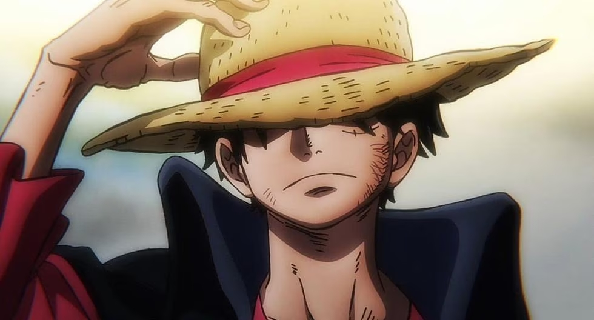
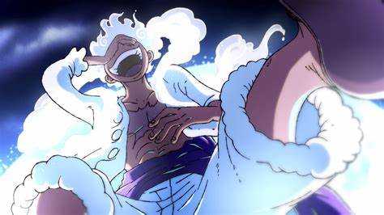

One Piece (stylized in all caps) is a Japanese manga series written and illustrated by Eiichiro Oda. It has been serialized in Shueisha's shōnen manga magazine Weekly Shōnen Jump since July 1997, with its chapters compiled in 110 tankōbon volumes as of November 2024. The series follows the adventures of Monkey D. Luffy and his crew, the Straw Hat Pirates, as he explores the Grand Line in search of the mythical treasure known as the "One Piece" to become the next King of the Pirates.
The manga spawned a media franchise, having been adapted into a festival film by Production I.G, and an anime series by Toei Animation, which began broadcasting in 1999. Additionally, Toei has developed fourteen animated feature films, one original video animation, and thirteen television specials. Several companies have developed various types of merchandising and media, such as a trading card game and numerous video games. The manga series was licensed for an English language release in North America and the United Kingdom by Viz Media and in Australia by Madman Entertainment. The anime series was licensed by 4Kids Entertainment for an English-language release in North America in 2004 before the license was dropped and subsequently acquired by Funimation in 2007.Netflix released a live action TV series adaptation in 2023.
One Piece has received praise for its storytelling, world-building, art, characterization, and humour. It has received many awards and is ranked by critics, reviewers, and readers as one of the best manga of all time. By August 2022, it had over 516.6 million copies in circulation in 61 countries and regions worldwide, making it the best-selling manga series in history, and the best-selling comic series printed in a book volume. Several volumes of the manga have broken publishing records, including the highest initial print run of any book in Japan. In 2015 and 2022, One Piece set the Guinness World Record for "the most copies published for the same comic book series by a single author". It was the best-selling manga for eleven consecutive years from 2008 to 2018 and is the only manga that had an initial print of volumes of above 3 million continuously for more than 10 years, as well as the only one that had achieved more than 1 million copies sold in all of its over 100 published tankōbon volumes. One Piece is the only manga whose volumes have ranked first every year in Oricon's weekly comic chart existence since 2008.